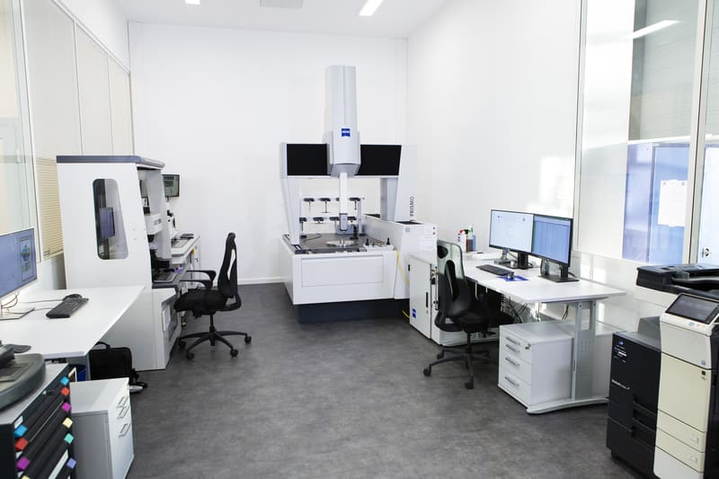
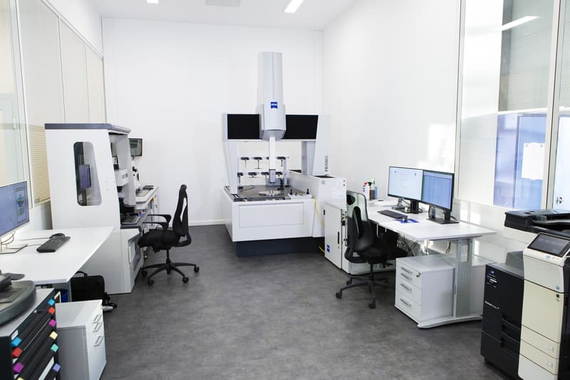
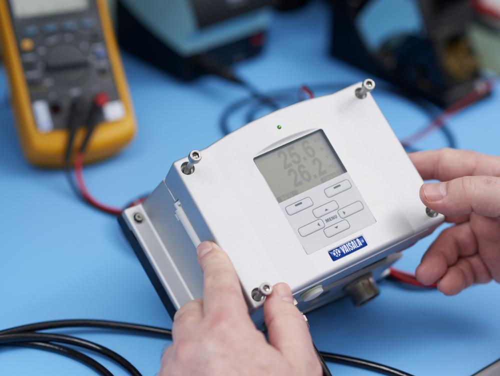
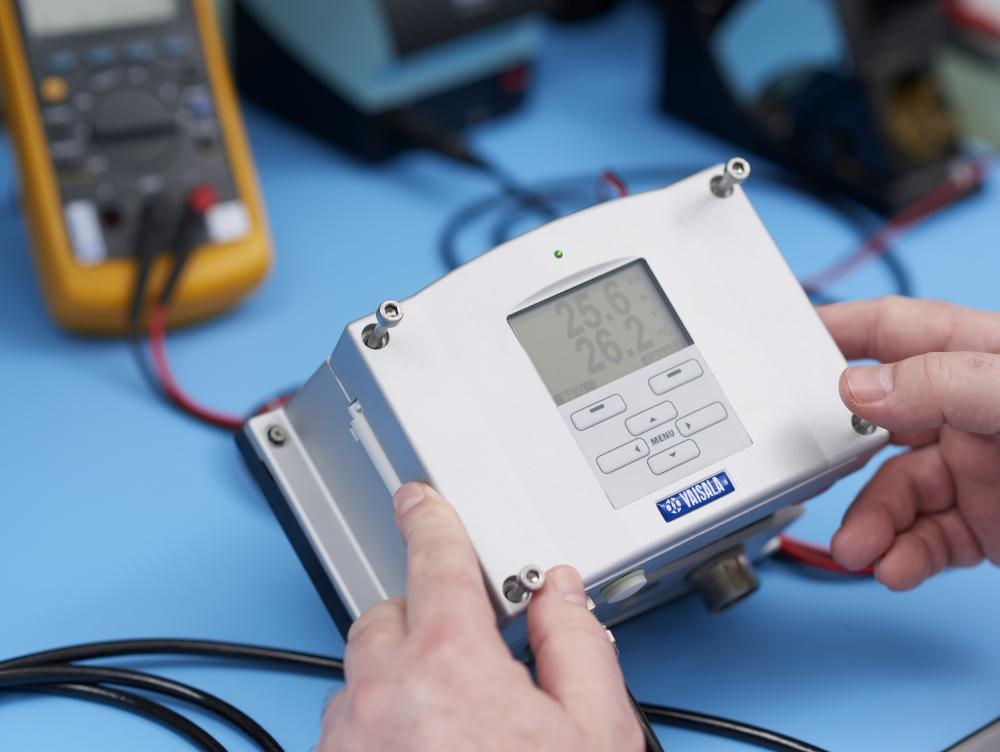

 

L2MQ est une société marocaine, spécialisée dans la fourniture et étalonnage et maintenance des appareils et instruments de mesure, de contrôle, d’inspection et de protection destinés à divers marchés des secteurs industriel : ELECTRICITE, ELECTRONIQUE, OPTO-ELECTRONIQUE, PETROCHIMIE, BIOLOGIE, Alimentaire, SECURITE INDUSTRIELLE, BIOMEDICALE entres autres.
Le vibromètre interférométrique (série LS-V NG) développé par SIOS GmbH est un instrument idéal pour une détermination précise et sans contact du changement de position d’objets ou de surfaces en fonction du temps pour des fréquences allant de 0 à 6MHz.
Demander un devisPour différentes raisons on peut être amené à devoir surveiller le taux d’humidité présent dans l’air. Que ce soit pour préserver des cigares, par exemple, ou pour se prémunir de problèmes de santé liés à un taux trop faible ou trop élevé d’humidité.
Demander un devisUn sonomètre est un appareil de mesure utilisé pour évaluer le niveau sonore en décibels (dB).
Demander un devisLa mesure de l’épaisseur des revêtements de surface est une étape cruciale dans le contrôle de la qualité des produits industriels. Elle permet d’assurer la performance et la durabilité des revêtements, tout en garantissant la conformité aux normes réglementaires.
Demander un devis